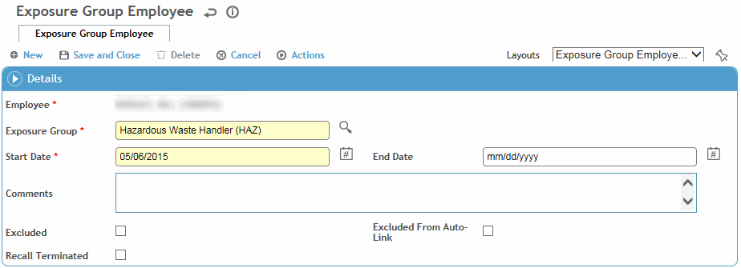

Similar exposure groups (SEGs) are defined in the SimilarExposureGroup or ExposureGroup table (depending if you are considered an IH user managing Similar Exposure Groups, or a Medical user managing Surveillance Groups). For quick access to the look-up table, choose SEG Management from the Occupational Health or Industrial Hygiene menu.
On the Surveillance tab of an employee demographic record:
The SEGs Linked to Employee Job section displays SEGs associated with the employee’s position; these are defined on the Linked Jobs tab of the SimilarExposureGroup/ExposureGroup table.
The SEGs Related to Individual Employee section lists all the SEGs to which the employee belongs or from which the employee is excluded. SEGs in this list may or may not also be in the top table (associated with the employee’s job position).
Note: Even if you do not have site security access to an employee’s health center, if they are within your GDDLOFB you can view/add/edit records in this section.
The Agents Related to Employee Job section lists substances to which SEGs associated with the employee’s job are exposed, with the dates of the exposure. These are defined on the Potential Exposure tab of the SimilarExposureGroup/ExposureGroup table.
To modify the employee’s list of SEGs, click the name of the SEG, or click New.

Select an SEG, enter the Start Date and any Comments.
Entering an End Date for an SEG will automatically remove the employee from the SEG when the end date equals the current date. On that date, and thereafter, the employee will no longer be part of the SEG nor will they be recalled for any surveillance activities defined in the SEG.
Indicate if you want to exclude the employee.
If you want the employee to remain in the SEG to receive surveillance even if terminated, select the Recall Terminated checkbox. (For example, symptomatic employees may need to be kept in an asbestos program after retirement.)
Click Save.